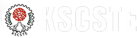

International Conference on
Advances in Applied Probability
& Stochastic Processes
(ICAAP & SP-2026)
Organized by the Department of Mathematics, KAHM Unity Women's College (Autonomous), Manjeri, in association with the Ramanujan Mathematical Society and the Kerala Mathematical Association.
Co-sponsored by:

The Kerala State Council for Science, Technology and Environment (KSCSTE) is an autonomous body established by the Government of Kerala to promote and strengthen science, technology, and environmental research in the state. It plays a vital role in fostering scientific research, innovation, technological development, and environmental sustainability through various programmes, research initiatives, funding opportunities, and academic collaborations. KSCSTE aims to create a strong research ecosystem by encouraging scientific excellence, supporting researchers and institutions, and facilitating the application of scientific knowledge to address societal and developmental challenges. The Council also promotes collaboration among academic institutions, industries, and research organisations, thereby contributing to Kerala's growth as a knowledge-driven and innovation-oriented society.
Scope
Topics to be covered
The scope of the conference covers all topics in Applied Probability and Stochastic Processes. However, the main topics of discussion are:
- Queueing theory applied to telecommunication and computer networks
- Queueing inventory, including production inventory with positive service time
- Reliability
- Classical inventory
- Coupling of random variables and processes
- Insurance and risk
- Theory of large deviation
- Stochastic calculus
- Stochastic control
- Markov and semi-Markov decision processes
Advisory
International Academic Programme Committee
Chairperson: Dr. Achyutha Krishnamoorthy, ICAAP & SP 2026
- Prof. S. R. Srinivasa Varadhan, Courant Institute, New York, USA
- Prof. Alexander Dudin, Belarussian State University, Minsk, Belarus
- Dr. V. Ramaswami, Hindu University, New Jersey, USA
- Prof. Arni S. R. Srinivasa Rao, Medical College of Georgia, USA
- Prof. Vivek S. Borkar, IIT Bombay, India
- Prof. S. Dharmaraja, IIT Delhi, India
- Prof. Masakiyo Miyazawa, Tokyo University of Science, Japan
- Prof. Agassi Melikov, Baku Engineering University, Azerbaijan
- Prof. Mrinal K. Ghosh, Indian Statistical Institute, Kolkata, India
- Prof. Antonio Gómez Corral, Complutense University of Madrid, Spain
- Prof. Qi Ming He, University of Waterloo, Canada
- Prof. Onno Boxma, Eindhoven University of Technology, Netherlands
- Prof. M. Manoharan, University of Calicut
- Prof. V. Thangaraj, Ramanujan Institute, Chennai
- Prof. Rameshan Vittal, Madras University, Chennai
- Capt. Dr. Jaison Jacob, St. Aloysius College, Thrissur
Mark Your Calendar
Important dates
- 01 August 2026Paper submission opens
- 01 August 2026Registration opens
- 15 November 2026Paper submission closes
- Within 10 daysNotification of acceptance (from submission)
- 10 December 2026Registration closes
- 19, 21 & 22 December 2026Conference dates
Getting Here
How to reach KAHM Unity Women's College (Autonomous), Manjeri
✈️ By Air
The nearest airport is Calicut International Airport (CCJ), Karipur, located 22 km from KAHM Unity Women's College (Autonomous), Manjeri. From the airport, hire a taxi or cab directly to the college. The journey takes approximately 30–40 minutes.
🚆 By Train
The nearest major railway stations are Kozhikode (CLT) and Tirur (TIR).
- From Kozhikode: KSRTC and private buses are available at frequent intervals from Kozhikode to Manjeri throughout the day. The journey takes approximately 1 hour and 30 minutes. Get down at Alukkal bus stop and hire an auto-rickshaw to KAHM Unity Women's College.
- From Tirur: Board a KSRTC or private bus to Manjeri — direct buses are available at regular intervals throughout the day. The journey to Manjeri Bus Stand takes approximately 2 hours, depending on traffic. From Manjeri Bus Stand, hire an auto-rickshaw to KAHM Unity Women's College.
Registration